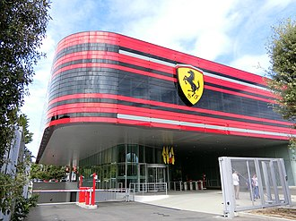

Ferrari haqida
Ferrari SpA (/ f ə ˈ r ɑːr i / italyancha: [ferˈraːri]) — Italiyaning Maranello shahrida joylashgan hashamatli sport avtomobillari ishlab chiqaruvchi kompaniya. 1939-yilda Enzo Ferrari tomonidan Alfa Romeo poyga boʻlimidan Auto Avio Costruzioni nomi bilan asos solingan kompaniya hisoblanadi. Kompaniya 1940-yilda birinchi mashinasini ishlab chiqargan va 1947-yilda oʻzining birinchi Ferrari nishonli avtomobilini ommaga namoyish qilgan. Fiat SpA 1969-yilda Ferrarining 50% ulushini sotib oldi va 1988-yilda oʻz ulushini 90% gacha kengaytirdi. 2014-yil oktabr oyida Fiat Chrysler Automobiles (FCA) Ferrari SpAʼni FCAʼdan ajratish niyatini eʼlon qildi. eʼlonga koʻra, FCA Ferrarining 90% ga egalik qiladi[1][2]. Ajralish 2015-yil oktabr oyida Ferrari NV ni (Niderlandiyada roʻyxatga olingan kompaniya) Ferrari SpA guruhining yangi xolding kompaniyasi sifatida tashkil etgan. Ajralishning qolgan bosqichlari orqali FCA ning Ferrari biznesidagi aktsiyalari FCA aktsiyadorlariga taqsimlandi, 10% esa Piero Ferrari ga tegishli boʻlishda davom etdi[3][4]. Spin-off 2016-yil 3-yanvarda yakunlandi[5]. Kompaniya oʻzining butun tarixi davomida poygadagi doimiy ishtiroki bilan, ayniqsa, eng qadimgi va eng muvaffaqiyatli poyga jamoasi boʻlgan, eng koʻp konstruktorlar chempionatlarini (16) oʻtkazgan va eng koʻp haydovchilari Formula 1 poygalarida doimiy ishtiroki bilan tanilgan kompaniyadir. Formula 1 poygalarida 15 dan ziyod gʻalabaga erishgan[6]. Ferrari avtomobillari odatda tezlik, hashamat va boylik ramzi sifatida koʻriladi[7]. Ferrari avtomobillari 165 000 kvadrat metr (16,5 gektar) Maranello zavodida ishlab chiqariladi. 2014-yilda Ferrari Brand Finance tomonidan dunyodagi eng kuchli brend deb topildi[8]. 2018-yil iyun oyida 1963-yilgi 250 GTO 70 million dollarga sotilib, tarixdagi eng qimmat avtomobilga aylandi[9][10]. 2021-yil holatiga koʻra, Ferrari 52,21 milliard dollar bilan bozor kapitallashuvi boʻyicha 10-yirik avtomobil ishlab chiqaruvchisi hisoblanadi[11].
